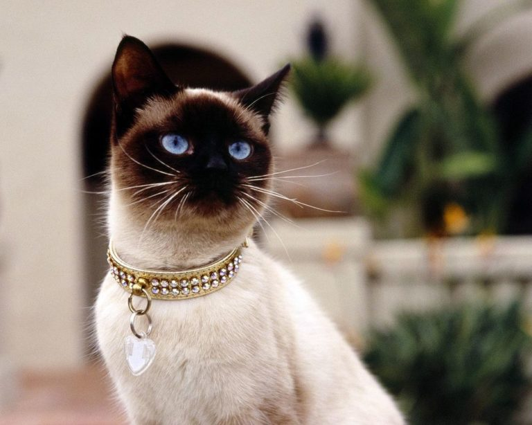
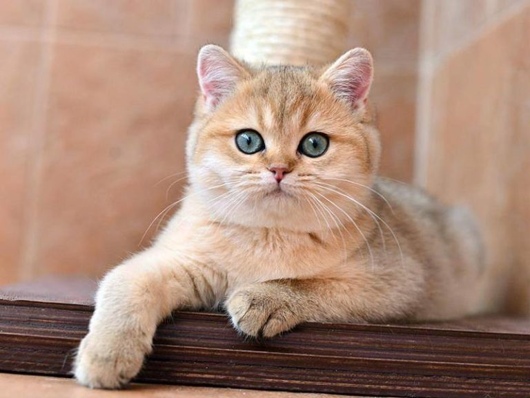
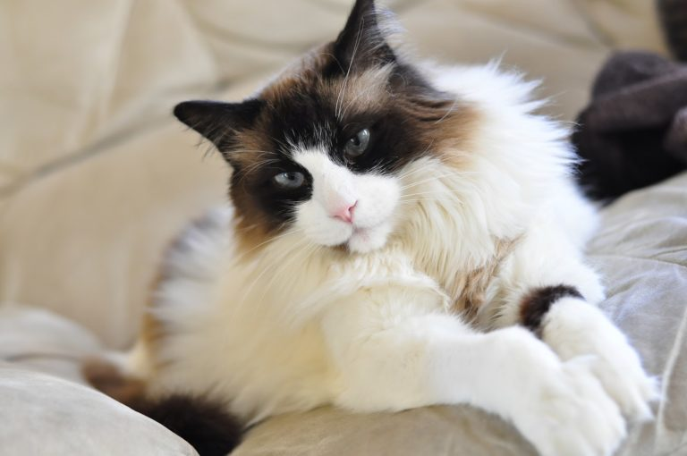
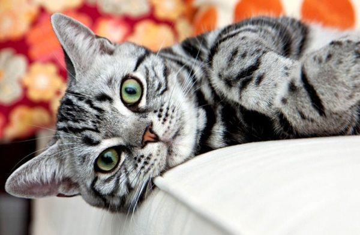
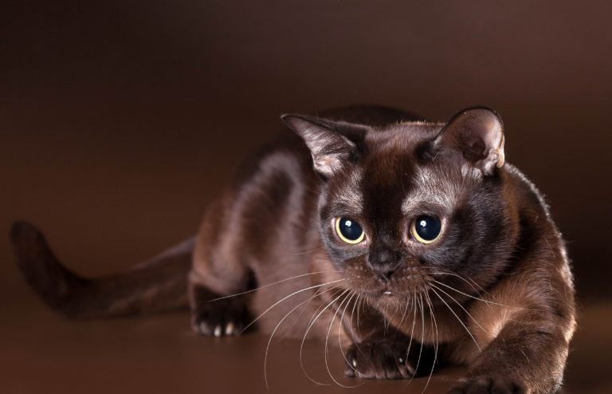

Сіамська кішка
Вони дуже миролюбні, прекрасно уживаються у квартирі.

Британська плюшева кішка
Коти дуже флегматичні, трохи ледачі, повільні.

Регдолл
М’який характер, вони ідеальні для дому
Сіамська кішка
В таких котах ви ніколи не розчаруєтеся, бо байдуже дивитися на них просто не виходить!

Американська короткошерста кішка
Вони невибагливі, ласкаві, ніжні, поступливий характер.

Бурма
Діти з ними прекрасно ладнають. Кішки ніколи не виростають з віку кошенят.